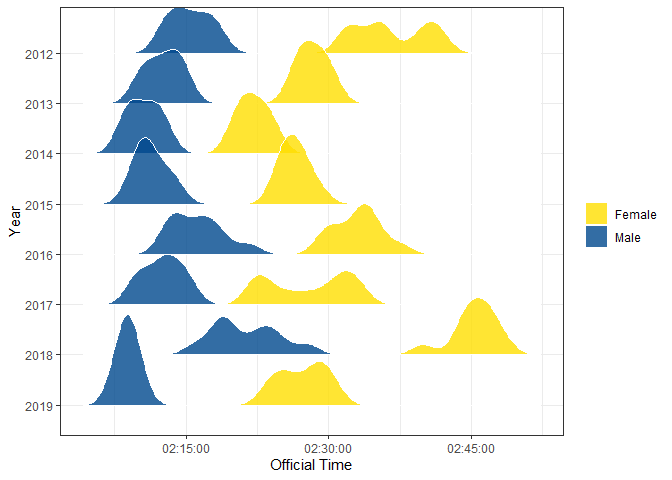

Overview
bostonmarathonstats provides an easy way to analyze data of runners that finished the Boston Marathon from 2009 to 2022.
-
boston_summary()summarises data of an year. -
boston_positionsearches the athletes that finished in a certain position. -
boston_countrysummarises data of a country. -
boston_athletesearches results of an athlete. -
boston_density_ridges()make a density plot of the amount of runners over the finishing time.
Installation
You can install the development version of bostonmarathonstats from GitHub with:
# install.packages("devtools")
devtools::install_github("nathanhonorato/bostonmarathonstats")Examples
This is a basic example of one of the functions of this package. boston_summary informs the numbers of finishers by gender of a certain year of event.
library(bostonmarathonstats)
boston_summary(gender = "Female", year = 2021)
#> # A tibble: 1 × 7
#> gender year n_finishers mean_age n_countries fastest_time slowest_time
#> <chr> <int> <int> <dbl> <int> <Period> <Period>
#> 1 Female 2021 7444 43.0 64 2H 24M 45S 7H 33M 22SThese are the first few rows of the database results_boston used in this package called. It has data about the runners such as gender, residence information and finishing time.
| Year | FullName | AgeOnRaceDay | Gender | City | StateAbbrev | StateName | Zip | CountryOfResAbbrev | CountryOfResName | CountryOfCtzAbbrev | CountryOfCtzName | OfficialTime | RankOverall | RankOverGender | RankOverDivision | SubGroupLabel | SubGroup |
|---|---|---|---|---|---|---|---|---|---|---|---|---|---|---|---|---|---|
| 2009 | Deriba Merga | 28 | Male | Addis Ababa | NA | NA | NA | ETH | Ethiopia | ETH | Ethiopia | 7722 secs | 1 | 1 | 1 | NA | NA |
| 2009 | Daniel Rono | 30 | Male | Keiyo | NA | NA | NA | KEN | Kenya | KEN | Kenya | 7772 secs | 2 | 2 | 2 | NA | NA |
| 2009 | Ryan Hall | 26 | Male | Mammoth Lakes | CA | California | NA | USA | United States of America | USA | United States of America | 7780 secs | 3 | 3 | 3 | NA | NA |
| 2009 | Tekeste Kebede | 27 | Male | Addis Ababa | NA | NA | NA | ETH | Ethiopia | ETH | Ethiopia | 7789 secs | 4 | 4 | 4 | NA | NA |
| 2009 | Robert Cheruiyot | 20 | Male | Bomet | NA | NA | NA | KEN | Kenya | KEN | Kenya | 7806 secs | 5 | 5 | 5 | NA | NA |
This package also has the function boston_density_ridges() to make a density plot of finishing times:
#> Picking joint bandwidth of 74.7